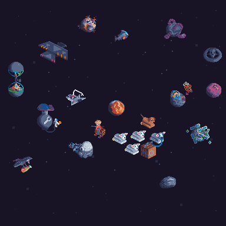
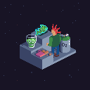
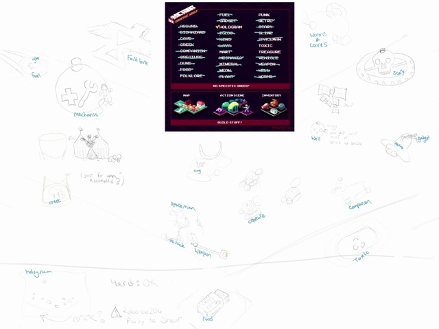

Octobit
2018 recently finished up. I'm quite pleased with how all the art I drew
turned out!


I imagine a whole ecosystem of cyborgs and robots, living off of sunlight
and the mineral-rich asteroids. For the indoor tiles, I imagine a punk ranch
hand keeping an eye on the action through a hologram.
Planning
This was my third year participating in octobit (see:
2017,
2016).
I've enjoyed each year and am very grateful to
Bruno,
the organizer, for encouraging us all to participate.
This year was different from the previous years in a couple ways:
- Previously there had been no restrictions on style, other than pixel
art (and a suggested palette). This year, the
organizer suggested we draw in isometric perspective.
- Instead of a theme for each day, we could decide to draw each theme
in any order.
- Optionally, attempt to make our isometric tiles fit together as a
whole.
I followed
Bruno's
advice to plan ahead and sketched out a few ideas. Eventually, I decided
on a "space ranching" theme.

Some of my planning sketches.
Space ranching has been on my mind for over 5 years, and octobit felt like
a good opportunity to make some progress on the idea.
Posting
This year, I posted my artworks to my website first and then syndicated to
social media (a.k.a. IndieWeb POSSE)
with a little
help from micro.blog.
In 2016 and 2017, I posted to Twitter first and then
all the various social networks. It was a daily chore, and it felt like it!
This year felt much better.
I didn't post every day, which contributed to the more relaxed feeling.
There were days when I was able to draw ahead and queue up a few artworks.
This meant that I could have a few less productive days without falling
behind.
Practicing
A few things about the artwork didn't go as well as I planned.
Scale
I drew the vehicles and planets at the same resolution, this meant that
they seemed the same size. In isometric projection, each pixel represents the
same amount of distance, no matter how far away it is from the viewer. This
meant that if I wanted a cohesive drawing, either my planets should have been
much larger or the vehicles should have been much smaller.
The final collage feels crowded. Space shouldn't be like that. There
should be a lot of whitespace between the objects to give a better sense of
the overall scale. Right now it feels like a collection of toys.
Lighting
In each work, imagined light coming from the bottom-right, but I only did
a so-so job of shading. I think the shading probably turned out best in the
planets.


These were much easier to shade because they are basically spheres. I want
to get better at shading shiny spaceships (the space shuttle is too matte)

and woolly creatures (the sheep looks speckled, not wooly)

I hope to study more before the next octobit, using tools like Pixel Art Academy to level-up my skills.
Participating
The main reason I join octobit each year is to be a part of the online
pixel art community. Other artists there are friendly and making amazing
artworks. Some of the other pixel artists whose work I enjoyed this past
October include:
Despite seeing my art alongside these great artists, this year felt
lonelier than past years. I should have commented more on other artists'
posts throughout the month. I also wonder if I should engage in some of the
pixel art specific
communities. In the past, more artists on Twitter commented on each
other's works, but maybe people have moved on to somewhere else?
I was a little disappointed by micro.blog. It's possible there were other
artists participating in octobit or inktober there, but I didn't see them.
With no hashtags (or even an art-specific emoji tag), it's impossible to
discover people working on drawing challenges like octobit. Still, I'm glad I
joined, because it encouraged me to post to my own site.
Conclusion
I had a great time participating in octobit this year, and I look forward
to joining again in future years. Next time around, I will comment more on
others artwork to feel more connected to the community. I plan to be even
better at pixel art next year, too. :-)